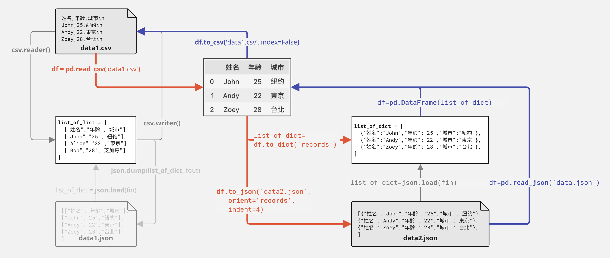

P06 Pandas#
Pandas cheat sheet: https://pandas.pydata.org/Pandas_Cheat_Sheet.pdf
1. Introduction to Pandas and DataFrame#
Pandas模仿Matlab或R的dataframe的函式庫。在資料科學逐漸發展的過程，這些資料大多以類似統計軟體或者Excel等試算表（Sheet）的狀態儲存，也就是二維的表格，且通常是直欄為變數、而橫列為資料列。
把這些資料讀進Python時，固然可以讀成List-of-dictionary或List-of-list的型態，但大部分資料操作的思考邏輯，都是以欄和列為基礎，例如增加一個欄是refactor以後的結果、或者篩選出某些變數符合條件的資料列，或者依據某個欄來重新排列資料列的位置。而Pandas可以說就是被設計來滿足這樣的需求的，
隨著資料科學受世人重視，而發展的越來越完整。例如，Pandas中便有以下函式：
Reading files:
pd.read_csv('data.csv')或讀取JSONpd.read_json('data.json')Filtering data: Slicing data
df[0:10]、Selecting datadf['col1']、Filtering datadf[df['col1'] > 0]Mutating a new variable(on column), Observing a variable, Changing data type
Arranging (Sorting) data:
df.sort_values(by = 'col1')Summarizing data (group by columns):
df.groupby('col1').mean()NA removal:
df.dropna(), Duplicate removal:df.drop_duplicates(inplace = True)Basic correlation:
df.corr()Pivot table and reshape data:
df.pivot_table(index = 'col1', columns = 'col2', values = 'col3')Joining data:
pd.merge(df1, df2, on = 'col1')Concatenating data:
pd.concat([df1, df2])
2. Creating dataframe#
Most datasets can be thought of in a tabular form, where rows represent individual records and columns represent attributes. This is why the Pandas DataFrame is such a powerful and widely used tool. Unlike a simple one-layer List or Dict, real-world data often comes in more complex structures—such as nested lists/dictionaries, or collections of multiple lists and dictionaries. Among these, the most common and practical format is the list of dictionaries, which maps naturally to rows and columns and can be easily converted into a DataFrame for analysis.
import pandas as pd
data = [
{"name": "Alice", "age": 25, "city": "Taipei"},
{"name": "Bob", "age": 30, "city": "Tainan"},
{"name": "Cathy", "age": 28, "city": "Taichung"}
]
df = pd.DataFrame(data)
df
| name | age | city | |
|---|---|---|---|
| 0 | Alice | 25 | Taipei |
| 1 | Bob | 30 | Tainan |
| 2 | Cathy | 28 | Taichung |
2.1 Read CSV: 違規藥品廣告#
違規藥品廣告資料集 https://data.nat.gov.tw/dataset/14196
The dataset contains information about illegal drug advertisements, including the name of the drug, the type of advertisement, the date it was reported, and the source of the report. We will use pd.read_csv() to read the url and load the data into a DataFrame.
import pandas as pd
drug_df = pd.read_csv('https://raw.githubusercontent.com/p4css/py4css/main/data/drug_156_2.csv')
drug_df.head()
| 違規產品名稱 | 違規廠商名稱或負責人 | 處分機關 | 處分日期 | 處分法條 | 違規情節 | 刊播日期 | 刊播媒體類別 | 刊播媒體 | 查處情形 | |
|---|---|---|---|---|---|---|---|---|---|---|
| 0 | 維他肝 | 豐怡生化科技股份有限公司/朱O | NaN | 03 31 2022 12:00AM | NaN | 廣告內容誇大不實 | 02 2 2022 12:00AM | 廣播電台 | 噶瑪蘭廣播電台股份有限公司 | NaN |
| 1 | 現貨澳洲Swisse ULTIBOOST維他命D片calcium vitamin VITAM... | 張O雯/張O雯 | NaN | 01 21 2022 12:00AM | NaN | 廣告違規 | 11 30 2021 12:00AM | 網路 | 蝦皮購物 | 輔導結案 |
| 2 | ✈日本 代購 參天製藥 處方簽點眼液 | 蘇O涵/蘇O涵 | NaN | 01 25 2022 12:00AM | NaN | 無照藥商 | 08 27 2021 12:00AM | 網路 | 蝦皮購物 | NaN |
| 3 | ✈日本 代購 TSUMURA 中將湯 24天包裝 | 蘇O涵/蘇O涵 | NaN | 01 25 2022 12:00AM | NaN | 無照藥商 | 08 27 2021 12:00AM | 網路 | 蝦皮購物 | 輔導結案 |
| 4 | _Salty.shop 日本代購 樂敦小花 | 曾O嫺/曾O嫺 | NaN | 02 17 2022 12:00AM | 藥事法第27條 | 無照藥商 | 12 6 2021 12:00AM | 網路 | 蝦皮購物 | 處分結案 |
# `%who` is a magic command that lists all variables of the current session
%who
drug_df pd
2.2 Properties of DataFrame#
Display and rename columns
head()To get a quick overview of a DataFrame, we can use the.head()method. By default, it displays the first five rows, allowing us to quickly check the structure and content of the dataset..columnsand renaming columns Sometimes we may want to adjust the column names in a DataFrame to make them more descriptive or tailored to our needs. One way is to directly assign a new list of column names to the.columnsattribute. Alternatively, we can use the.rename()method to map old column names to new ones. For example:
# Check all variables of the dataframe
drug_df.columns
Index(['違規產品名稱', '違規廠商名稱或負責人', '處分機關', '處分日期', '處分法條', '違規情節', '刊播日期',
'刊播媒體類別', '刊播媒體', '查處情形'],
dtype='object')
drug_df.columns = [
'pname', 'cname', 'agency', 'issuedate', 'law', 'fact',
'pubDate', 'pubMediaType', 'pubMedia', 'trace']
drug_df.columns
drug_df.head()
| pname | cname | agency | issuedate | law | fact | pubDate | pubMediaType | pubMedia | trace | |
|---|---|---|---|---|---|---|---|---|---|---|
| 0 | 維他肝 | 豐怡生化科技股份有限公司/朱O | NaN | 03 31 2022 12:00AM | NaN | 廣告內容誇大不實 | 02 2 2022 12:00AM | 廣播電台 | 噶瑪蘭廣播電台股份有限公司 | NaN |
| 1 | 現貨澳洲Swisse ULTIBOOST維他命D片calcium vitamin VITAM... | 張O雯/張O雯 | NaN | 01 21 2022 12:00AM | NaN | 廣告違規 | 11 30 2021 12:00AM | 網路 | 蝦皮購物 | 輔導結案 |
| 2 | ✈日本 代購 參天製藥 處方簽點眼液 | 蘇O涵/蘇O涵 | NaN | 01 25 2022 12:00AM | NaN | 無照藥商 | 08 27 2021 12:00AM | 網路 | 蝦皮購物 | NaN |
| 3 | ✈日本 代購 TSUMURA 中將湯 24天包裝 | 蘇O涵/蘇O涵 | NaN | 01 25 2022 12:00AM | NaN | 無照藥商 | 08 27 2021 12:00AM | 網路 | 蝦皮購物 | 輔導結案 |
| 4 | _Salty.shop 日本代購 樂敦小花 | 曾O嫺/曾O嫺 | NaN | 02 17 2022 12:00AM | 藥事法第27條 | 無照藥商 | 12 6 2021 12:00AM | 網路 | 蝦皮購物 | 處分結案 |
2.3 Columns of Dataframe: pandas Series#
Pandas Series 是一種一維陣列結構，用於存儲同類型的資料，並且每個資料點都有一個與之相關聯的索引。與 Python 的原生 list 不同，Pandas Series 提供了更豐富的功能和操作，包括但不限於資料對齊、切片、過濾以及集成的描述性統計方法。除了這些，Pandas Series 支援更多複雜的資料類型，並且能夠更高效地進行向量化操作。簡而言之，雖然 Pandas Series 和 list 都可以用於存儲一維資料，但 Series 提供了更多專為數據分析而設計的功能和優化。
print(type(drug_df.pubMediaType))
pubMediaType = list(drug_df.pubMediaType)
print(type(pubMediaType))
pubMediaType_df = pd.DataFrame(pubMediaType, columns=['pubMediaType'])
pubMediaType_df.head() # Show the first 10 rows
# print(set(drug_df.pubMediaType))
# drug_df
<class 'pandas.core.series.Series'>
<class 'list'>
| pubMediaType | |
|---|---|
| 0 | 廣播電台 |
| 1 | 網路 |
| 2 | 網路 |
| 3 | 網路 |
| 4 | 網路 |
2.4 Counting: Operations on Series#
接下來希望計算一下每個廣告類型pubMediaType的數量，以便我們可以了解哪些類型的廣告最多。
過去我們會用collections套件的Counter方法來計算。但是現在我們可以使用.value_counts()方法來計算每個類型的廣告數量。這個方法將返回一個包含每個類型廣告數量的 Pandas Series，其中索引是廣告類型，值是廣告數量。
# Using `Counter` to count the number of each type of publication media
from collections import Counter
type_dict = Counter(drug_df.pubMediaType)
print(type_dict)
print(Counter(drug_df.fact).most_common(10))
Counter({'網路': 2609, '廣播電台': 119, '平面媒體': 117, '電視': 109, '其他': 16, nan: 2})
[('無照藥商', 1434), ('廣告違規', 248), ('無違規', 185), ('其刊登或宣播之廣告內容與原核准廣告內容不符', 134), (nan, 132), ('非藥商刊登或宣播藥物廣告', 108), ('藥品未申請查驗登記', 94), ('刊播未申請核准之廣告', 85), ('廣告內容誇大不實', 67), ('禁藥', 40)]
drug_df.pubMediaType.value_counts()
# drug_df['pubMediaType'].value_counts()
pubMediaType
網路 2609
廣播電台 119
平面媒體 117
電視 109
其他 16
Name: count, dtype: int64
3. Pandas Operations#
3.1 Convert JSON to DataFrame: Youbike#
In the following example, we will read the Youbike data from a JSON file and convert it into a Pandas DataFrame for further analysis.Current Youbike data API will return data in JSON format. We have three methods to convert JSON data into a Pandas DataFrame.
We can use the
requestslibrary to fetch the data from the API endpoint, and then convert the JSON data into a python objects composed of lists and dictionaries using the.json()method. Finally, we can pass the list of dictionaries to thepd.DataFrame()constructor to create a DataFrame.We can use the
pd.json_normalize()function to convert the nested JSON data into a flat table structure, which is suitable for analysis with Pandas.We can use the
pd.read_json()function to read the JSON data directly from a URL or a file and convert it into a DataFrame.
import pandas as pd
pd.set_option('display.max_columns', None) # Show all columns when displaying a DataFrame
import requests
raw = requests.get('https://tcgbusfs.blob.core.windows.net/dotapp/youbike/v2/youbike_immediate.json').json()
print(type(raw)) # list
# Convert list of dict to DataFrame
ubike_df = pd.DataFrame(raw)
ubike_df.head()
<class 'list'>
| sno | sna | sarea | mday | ar | sareaen | snaen | aren | act | srcUpdateTime | updateTime | infoTime | infoDate | Quantity | available_rent_bikes | latitude | longitude | available_return_bikes | |
|---|---|---|---|---|---|---|---|---|---|---|---|---|---|---|---|---|---|---|
| 0 | 500101001 | YouBike2.0_捷運科技大樓站 | 大安區 | 2025-09-21 22:49:02 | 復興南路二段235號前 | Daan Dist. | YouBike2.0_MRT Technology Bldg. Sta. | No.235， Sec. 2， Fuxing S. Rd. | 1 | 2025-09-21 22:49:30 | 2025-09-21 22:49:52 | 2025-09-21 22:49:02 | 2025-09-21 | 28 | 0 | 25.02605 | 121.54360 | 28 |
| 1 | 500101002 | YouBike2.0_復興南路二段273號前 | 大安區 | 2025-09-21 22:47:17 | 復興南路二段273號西側 | Daan Dist. | YouBike2.0_No.273， Sec. 2， Fuxing S. Rd. | No.273， Sec. 2， Fuxing S. Rd. (West) | 1 | 2025-09-21 22:49:30 | 2025-09-21 22:49:52 | 2025-09-21 22:47:17 | 2025-09-21 | 21 | 2 | 25.02565 | 121.54357 | 19 |
| 2 | 500101003 | YouBike2.0_國北教大實小東側門 | 大安區 | 2025-09-21 22:49:02 | 和平東路二段96巷7號 | Daan Dist. | YouBike2.0_NTUE Experiment Elementary School (... | No. 7， Ln. 96， Sec. 2， Heping E. Rd | 1 | 2025-09-21 22:49:30 | 2025-09-21 22:49:52 | 2025-09-21 22:49:02 | 2025-09-21 | 28 | 13 | 25.02429 | 121.54124 | 14 |
| 3 | 500101004 | YouBike2.0_和平公園東側 | 大安區 | 2025-09-21 22:43:02 | 和平東路二段118巷33號 | Daan Dist. | YouBike2.0_Heping Park (East) | No. 33， Ln. 118， Sec. 2， Heping E. Rd | 1 | 2025-09-21 22:49:30 | 2025-09-21 22:49:52 | 2025-09-21 22:43:02 | 2025-09-21 | 11 | 3 | 25.02351 | 121.54282 | 8 |
| 4 | 500101005 | YouBike2.0_辛亥復興路口西北側 | 大安區 | 2025-09-21 22:49:02 | 復興南路二段368號 | Daan Dist. | YouBike2.0_Xinhai Fuxing Rd. Intersection (Nor... | No. 368， Sec. 2， Fuxing S. Rd. | 1 | 2025-09-21 22:49:30 | 2025-09-21 22:49:52 | 2025-09-21 22:49:02 | 2025-09-21 | 16 | 11 | 25.02153 | 121.54299 | 5 |
3.2 Observation of DataFrame#
Oberserving data
df.info()can be used to check data type, non-null count, memory usage.df.describe()can be used to get statistical summary of numerical columns, including count, mean, std, min, 25%, 50%, 75%, max.
print("Dimension of DataFrame:", ubike_df.shape)
ubike_df.describe()
Dimension of DataFrame: (1653, 18)
| Quantity | available_rent_bikes | latitude | longitude | available_return_bikes | |
|---|---|---|---|---|---|
| count | 1653.000000 | 1653.000000 | 1653.000000 | 1653.000000 | 1653.000000 |
| mean | 27.266788 | 9.633394 | 25.053114 | 121.545101 | 17.013309 |
| std | 14.155256 | 9.008599 | 0.033403 | 0.031916 | 14.039026 |
| min | 5.000000 | 0.000000 | 24.976190 | 121.462280 | 0.000000 |
| 25% | 18.000000 | 3.000000 | 25.030100 | 121.522300 | 8.000000 |
| 50% | 24.000000 | 8.000000 | 25.050230 | 121.541170 | 14.000000 |
| 75% | 33.000000 | 14.000000 | 25.073320 | 121.566510 | 22.000000 |
| max | 99.000000 | 61.000000 | 25.145820 | 121.623060 | 98.000000 |
3.3 Select part of columns#
There are two common ways to select specific columns from a Pandas DataFrame: one is by specifying the column names directly, and the other is by selecting columns, rows or cells based on their index positions.
3.3.1 Subset columns by specifying column names#
Subsetting them by passing a list of column names inside the square brackets
df[['col1', 'col2']]Using the
.drop()method to drop columnsdf.drop(['col1', 'col2'], axis=1)
# Select part of columns
ubike_df[['sno', 'sna', 'Quantity', 'available_rent_bikes', 'sarea']].head()
# Drop part of columns
# axis=1 means drop columns, axis=0 means drop rows
ubike_df.drop(['ar', 'aren', 'snaen', 'latitude', 'longitude'], axis=1).head()
| sno | sna | sarea | mday | sareaen | act | srcUpdateTime | updateTime | infoTime | infoDate | Quantity | available_rent_bikes | available_return_bikes | |
|---|---|---|---|---|---|---|---|---|---|---|---|---|---|
| 0 | 500101001 | YouBike2.0_捷運科技大樓站 | 大安區 | 2025-09-21 22:25:18 | Daan Dist. | 1 | 2025-09-21 22:25:29 | 2025-09-21 22:25:52 | 2025-09-21 22:25:18 | 2025-09-21 | 28 | 0 | 28 |
| 1 | 500101002 | YouBike2.0_復興南路二段273號前 | 大安區 | 2025-09-21 22:20:05 | Daan Dist. | 1 | 2025-09-21 22:25:29 | 2025-09-21 22:25:52 | 2025-09-21 22:20:05 | 2025-09-21 | 21 | 1 | 20 |
| 2 | 500101003 | YouBike2.0_國北教大實小東側門 | 大安區 | 2025-09-21 22:21:01 | Daan Dist. | 1 | 2025-09-21 22:25:29 | 2025-09-21 22:25:52 | 2025-09-21 22:21:01 | 2025-09-21 | 28 | 6 | 21 |
| 3 | 500101004 | YouBike2.0_和平公園東側 | 大安區 | 2025-09-21 22:10:03 | Daan Dist. | 1 | 2025-09-21 22:25:29 | 2025-09-21 22:25:52 | 2025-09-21 22:10:03 | 2025-09-21 | 11 | 3 | 8 |
| 4 | 500101005 | YouBike2.0_辛亥復興路口西北側 | 大安區 | 2025-09-21 22:02:02 | Daan Dist. | 1 | 2025-09-21 22:25:29 | 2025-09-21 22:25:52 | 2025-09-21 22:02:02 | 2025-09-21 | 16 | 13 | 3 |
3.3.2 Selecting rows and cells by index#
# Select a single row
# .pipe() method is used to apply a function to the DataFrame
# display() function is used to display the DataFrame in a Jupyter Notebook
ubike_df.iloc[2].pipe(display)
# Select a single cell with row and column index
print("Show value of ubike_df at row 2, column 0 ==>", ubike_df.iloc[2, 0])
sno 500101003
sna YouBike2.0_國北教大實小東側門
sarea 大安區
mday 2025-09-21 22:21:01
ar 和平東路二段96巷7號
sareaen Daan Dist.
snaen YouBike2.0_NTUE Experiment Elementary School (...
aren No. 7， Ln. 96， Sec. 2， Heping E. Rd
act 1
srcUpdateTime 2025-09-21 22:25:29
updateTime 2025-09-21 22:25:52
infoTime 2025-09-21 22:21:01
infoDate 2025-09-21
Quantity 28
available_rent_bikes 6
latitude 25.02429
longitude 121.54124
available_return_bikes 21
Name: 2, dtype: object
Show value of ubike_df at row 2, column 0 ==> 500101003
3.4 Convert data type of columns#
Using pd.to_numeric(var) or pd.to_datetime(var) to convert a pandas Series to numeric or datetime type.
# ratio = sbi/tot
print(type(ubike_df['available_rent_bikes']))
ubike_df['ratio'] = pd.to_numeric(ubike_df['available_rent_bikes'])/pd.to_numeric(ubike_df['total'])
ubike_df[['sno', 'sna', 'total', 'available_rent_bikes', 'ratio']].head()
<class 'pandas.core.series.Series'>
| sno | sna | total | available_rent_bikes | ratio | |
|---|---|---|---|---|---|
| 0 | 500101001 | YouBike2.0_捷運科技大樓站 | 28 | 3 | 0.107143 |
| 1 | 500101002 | YouBike2.0_復興南路二段273號前 | 21 | 1 | 0.047619 |
| 2 | 500101003 | YouBike2.0_國北教大實小東側門 | 16 | 4 | 0.250000 |
| 3 | 500101004 | YouBike2.0_和平公園東側 | 11 | 1 | 0.090909 |
| 4 | 500101005 | YouBike2.0_辛亥復興路口西北側 | 16 | 2 | 0.125000 |
3.5 Creating a New Variable#
Method 1 – Using
.assign(). This creates a new variable (or column). Be careful—if you want to update the original DataFrame, you must assign the result back todf.df = df.assign(new_var = df.old_var1 / df.old_var2)
Method 2 – Direct assignment, This is another way to add a new column directly.
df["new_var"] = df.old_var1 / df.old_var2
Example: Creating a new variable
ratio = available_rent_bikes / totalfor the Ubike dataset.Type conversion: Use
pd.to_numeric()to convert a variable to a numeric type when needed.
ubike_df = ubike_df.assign(
available_rent_bikes = pd.to_numeric(ubike_df.available_rent_bikes),
Quantity = pd.to_numeric(ubike_df.Quantity))
ubike_df["ratio"] = ubike_df.available_rent_bikes / ubike_df.Quantity
# ubike_df.ratio2 = ubike_df.sbi / ubike_df.tot
# ubike_df = ubike_df.assign(ratio = ubike_df.sbi/ubike_df.tot)
# ubike_df.info()
ubike_df[['sno', 'sna', 'Quantity', 'available_rent_bikes', 'ratio']].head().pipe(display)
ubike_df.describe().pipe(display)
| sno | sna | Quantity | available_rent_bikes | ratio | |
|---|---|---|---|---|---|
| 0 | 500101001 | YouBike2.0_捷運科技大樓站 | 28 | 0 | 0.000000 |
| 1 | 500101002 | YouBike2.0_復興南路二段273號前 | 21 | 2 | 0.095238 |
| 2 | 500101003 | YouBike2.0_國北教大實小東側門 | 28 | 13 | 0.464286 |
| 3 | 500101004 | YouBike2.0_和平公園東側 | 11 | 3 | 0.272727 |
| 4 | 500101005 | YouBike2.0_辛亥復興路口西北側 | 16 | 11 | 0.687500 |
| Quantity | available_rent_bikes | latitude | longitude | available_return_bikes | ratio | |
|---|---|---|---|---|---|---|
| count | 1653.000000 | 1653.000000 | 1653.000000 | 1653.000000 | 1653.000000 | 1653.000000 |
| mean | 27.266788 | 9.973382 | 25.053114 | 121.545101 | 16.632184 | 0.390427 |
| std | 14.155256 | 9.174091 | 0.033403 | 0.031916 | 14.046713 | 0.291653 |
| min | 5.000000 | 0.000000 | 24.976190 | 121.462280 | 0.000000 | 0.000000 |
| 25% | 18.000000 | 3.000000 | 25.030100 | 121.522300 | 7.000000 | 0.130435 |
| 50% | 24.000000 | 8.000000 | 25.050230 | 121.541170 | 14.000000 | 0.357143 |
| 75% | 33.000000 | 14.000000 | 25.073320 | 121.566510 | 22.000000 | 0.600000 |
| max | 99.000000 | 61.000000 | 25.145820 | 121.623060 | 96.000000 | 1.000000 |
4. Summarizing data#
Tutorial: groupby pandas
df.groupby(col1)[col2].count()summarize col2 according to col1 by countingdf.groupby(col1)[col2].mean()summarize col2 according to col1 by calculating their average of each categorydf.groupby([col1, col3])[col2].count()summarize col2 according to col1 and col3 by counting
4.1 Count single variable by value_counts()#
# Conventional way
from collections import Counter
Counter(drug_df.pubMediaType)
Counter({'網路': 2609, '廣播電台': 119, '平面媒體': 117, '電視': 109, '其他': 16, nan: 2})
drug_df.head()
| pname | cname | agency | issuedate | law | fact | pubDate | pubMediaType | pubMedia | trace | |
|---|---|---|---|---|---|---|---|---|---|---|
| 0 | 維他肝 | 豐怡生化科技股份有限公司/朱O | NaN | 03 31 2022 12:00AM | NaN | 廣告內容誇大不實 | 02 2 2022 12:00AM | 廣播電台 | 噶瑪蘭廣播電台股份有限公司 | NaN |
| 1 | 現貨澳洲Swisse ULTIBOOST維他命D片calcium vitamin VITAM... | 張O雯/張O雯 | NaN | 01 21 2022 12:00AM | NaN | 廣告違規 | 11 30 2021 12:00AM | 網路 | 蝦皮購物 | 輔導結案 |
| 2 | ✈日本 代購 參天製藥 處方簽點眼液 | 蘇O涵/蘇O涵 | NaN | 01 25 2022 12:00AM | NaN | 無照藥商 | 08 27 2021 12:00AM | 網路 | 蝦皮購物 | NaN |
| 3 | ✈日本 代購 TSUMURA 中將湯 24天包裝 | 蘇O涵/蘇O涵 | NaN | 01 25 2022 12:00AM | NaN | 無照藥商 | 08 27 2021 12:00AM | 網路 | 蝦皮購物 | 輔導結案 |
| 4 | _Salty.shop 日本代購 樂敦小花 | 曾O嫺/曾O嫺 | NaN | 02 17 2022 12:00AM | 藥事法第27條 | 無照藥商 | 12 6 2021 12:00AM | 網路 | 蝦皮購物 | 處分結案 |
# Pandas way
drug_df.pubMediaType.value_counts()
pubMediaType
網路 2609
廣播電台 119
平面媒體 117
電視 109
其他 16
Name: count, dtype: int64
4.2 groupby() then count()#
drug_df.groupby('pubMediaType')[['pname', 'agency']].count()
| pname | agency | |
|---|---|---|
| pubMediaType | ||
| 其他 | 16 | 0 |
| 平面媒體 | 117 | 117 |
| 廣播電台 | 119 | 0 |
| 網路 | 2609 | 0 |
| 電視 | 109 | 0 |
4.3 groupby() then sum()#
Format: df.groupby(col_for_group)[variable_to_group].func()
col_for_group: 要作為群組根據的variable，例如將村里彙整為鄉鎮市區資料時，鄉鎮市區資料極為group的根據variable_to_group: 哪些要根據上述的群組來彙整，通常是值，如上例，那就是人口數、土地面積等。func(): 要用什麼函式來計算，是要計算每組組內的加總或平均？
ubike_df[['sarea', 'total', 'available_rent_bikes']]
| sarea | total | available_rent_bikes | |
|---|---|---|---|
| 0 | 大安區 | 28 | 3 |
| 1 | 大安區 | 21 | 1 |
| 2 | 大安區 | 16 | 4 |
| 3 | 大安區 | 11 | 1 |
| 4 | 大安區 | 16 | 2 |
| ... | ... | ... | ... |
| 1528 | 臺大公館校區 | 36 | 0 |
| 1529 | 臺大公館校區 | 40 | 0 |
| 1530 | 臺大公館校區 | 33 | 0 |
| 1531 | 臺大公館校區 | 99 | 46 |
| 1532 | 臺大公館校區 | 67 | 0 |
1533 rows × 3 columns
# sum up tot in each region(town-level)
ubike_df.groupby("sarea")["total"].sum()
sarea
中山區 4342
中正區 3493
信義區 3559
內湖區 4181
北投區 2832
南港區 2723
士林區 3162
大同區 1899
大安區 5348
文山區 2478
松山區 2490
臺大公館校區 2048
萬華區 2109
Name: total, dtype: int64
ubike_stat = ubike_df.groupby("sarea").agg({"total": "sum", "available_rent_bikes": "sum"}).reset_index()
ubike_stat
| sarea | total | available_rent_bikes | |
|---|---|---|---|
| 0 | 中山區 | 4342 | 1398 |
| 1 | 中正區 | 3493 | 892 |
| 2 | 信義區 | 3559 | 1077 |
| 3 | 內湖區 | 4181 | 1303 |
| 4 | 北投區 | 2832 | 1079 |
| 5 | 南港區 | 2723 | 1107 |
| 6 | 士林區 | 3162 | 1020 |
| 7 | 大同區 | 1899 | 917 |
| 8 | 大安區 | 5348 | 1362 |
| 9 | 文山區 | 2478 | 986 |
| 10 | 松山區 | 2490 | 873 |
| 11 | 臺大公館校區 | 2048 | 203 |
| 12 | 萬華區 | 2109 | 1001 |
5. Sort-by (Arrange)#
# ascending=False to sort by dscending order
ubike_stat.sort_values('total', ascending=False)
| sarea | total | available_rent_bikes | |
|---|---|---|---|
| 8 | 大安區 | 5348 | 1362 |
| 0 | 中山區 | 4342 | 1398 |
| 3 | 內湖區 | 4181 | 1303 |
| 2 | 信義區 | 3559 | 1077 |
| 1 | 中正區 | 3493 | 892 |
| 6 | 士林區 | 3162 | 1020 |
| 4 | 北投區 | 2832 | 1079 |
| 5 | 南港區 | 2723 | 1107 |
| 10 | 松山區 | 2490 | 873 |
| 9 | 文山區 | 2478 | 986 |
| 12 | 萬華區 | 2109 | 1001 |
| 11 | 臺大公館校區 | 2048 | 203 |
| 7 | 大同區 | 1899 | 917 |
ubike_df.sort_values('ratio', ascending=False)[['sno', 'sna', 'total', 'available_rent_bikes', 'ratio']].head(10)
| sno | sna | total | available_rent_bikes | ratio | |
|---|---|---|---|---|---|
| 1192 | 500111015 | YouBike2.0_福山公園 | 30 | 30 | 1.0 |
| 1235 | 500111058 | YouBike2.0_舊莊國小(舊莊街一段) | 18 | 18 | 1.0 |
| 311 | 500104052 | YouBike2.0_重慶北路四段190巷口 | 13 | 13 | 1.0 |
| 1138 | 500110052 | YouBike2.0_南京東路五段59巷口 | 17 | 17 | 1.0 |
| 762 | 500107141 | YouBike2.0_建國北路高架橋下停車場G區 | 18 | 18 | 1.0 |
| 757 | 500107136 | YouBike2.0_建國五常街口 | 20 | 20 | 1.0 |
| 1370 | 500112094 | YouBike2.0_吳興街284巷(廣安宮) | 15 | 15 | 1.0 |
| 1234 | 500111057 | YouBike2.0_力行橋(南港) | 18 | 18 | 1.0 |
| 1236 | 500111059 | YouBike2.0_向陽公園 | 17 | 17 | 1.0 |
| 1259 | 500111082 | YouBike2.0_南港路三段130巷口 | 12 | 12 | 1.0 |
6. Dataframe to files#
這門課，尤其是資料科學，會傾向於用Pandas DataFrame來操作資料，對於初期的觀察資料，或者資料的排序、彙整、計數、篩選、儲存與檔案轉換等，都非常方便。你會用到Pandas Dataframe來操作資料可能會有以下幾種情形：
將CSV或EXCEL檔案讀入成為Pandas DataFrame（常用）
將JSON檔案讀入成為Pandas DataFrame（常用）
將Pandas DataFrame寫入成為CSV或EXCEL檔案（常用）
將Pandas DataFrame寫入成為JSON檔案（常用）
將List of Dicts轉為Pandas DataFrame（常用）
將List of Lists轉為Pandas DataFrame
將Pandas DataFrame轉為List of Dicts
將Pandas DataFrame轉為List of Lists

Write Dataframe to files#
# Write DataFrame to CSV file
df.to_csv('data1.csv', index=False)
# Write DataFrame to Excel file
df.to_excel('data1.xlsx', index=False)
# Write DataFrame to JSON file
df.to_json('data1.json', orient='records')
Read files to Dataframe#
# Read CSV file to DataFrame
df = pd.read_csv('data1.csv')
# Read Excel file to DataFrame
df = pd.read_excel('data1.xlsx')
# Read JSON file to DataFrame
df = pd.read_json('data1.json', orient='records')